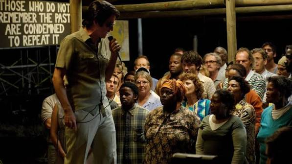
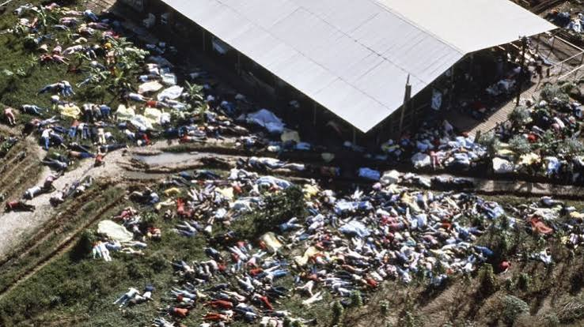

¿Qué sucedió?
Jonestown fue un asentamiento establecido en Guyana por miembros del movimiento religioso y político conocido como el Templo del Pueblo, dirigido por Jim Jones. El 18 de noviembre de 1978, después de que el congresista estadounidense Leo Ryan visitara el lugar para investigar denuncias de abusos, él y varias personas de su delegación fueron atacados en una pista de aterrizaje. Ese mismo día, en Jonestown, más de 900 personas murieron en un episodio de envenenamiento colectivo y violencia bajo las órdenes de Jones. Entre las víctimas había más de 200 niños. El acontecimiento es conocido como una de las mayores tragedias de muertes masivas relacionadas con un grupo religioso en la historia contemporánea.
Los hechos ocurrieron el 18 de noviembre de 1978 en Jonestown, una comunidad situada en la región noroccidental de Guyana, en Sudamérica, y en una pista de aterrizaje cercana a Port Kaituma.

Lo que está documentado
* Jim Jones dirigía el Templo del Pueblo y había trasladado a numerosos seguidores desde Estados Unidos hasta Guyana.
* Existían denuncias de abusos, trabajos forzados, restricciones a la libertad y control sobre los integrantes de la comunidad.
* El congresista Leo Ryan viajó a Guyana para investigar las denuncias y fue asesinado junto con otras personas cuando intentaba abandonar la zona.
* Más de 900 personas murieron en Jonestown; muchas fallecieron tras ingerir una bebida envenenada, mientras que otras fueron asesinadas.
* El FBI investigó el asesinato de Ryan y reunió pruebas relacionadas con los acontecimientos. Larry Layton fue condenado en Estados Unidos por delitos vinculados con el ataque en la pista de aterrizaje.
Lo que aún no se sabe
Continúa el debate sobre el grado de coerción que sufrieron las distintas personas que murieron, pues no todas participaron en las mismas circunstancias. Aunque existen grabaciones, testimonios y documentos, no se conoce con exactitud qué ocurrió con cada individuo durante las últimas horas. También es necesario distinguir entre quienes murieron por decisión propia, quienes fueron obligados y quienes fueron asesinados, especialmente en el caso de los niños.
